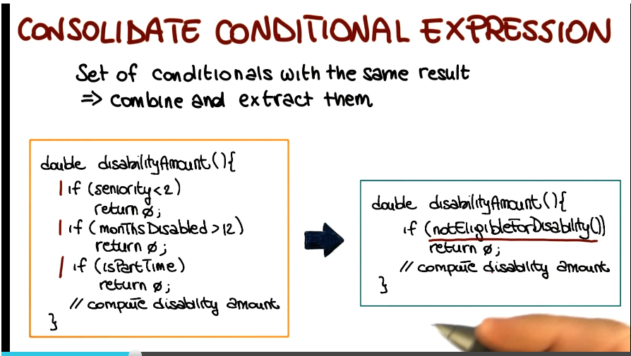
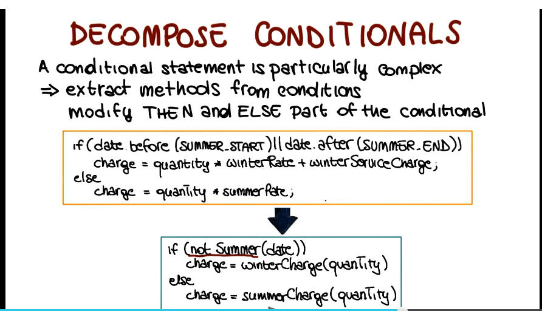
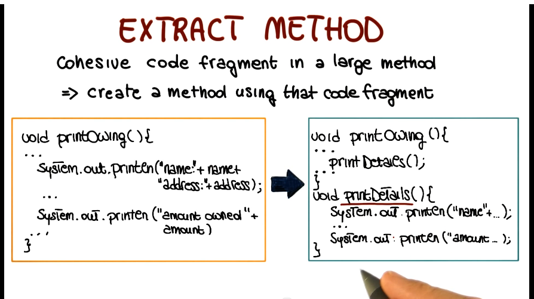
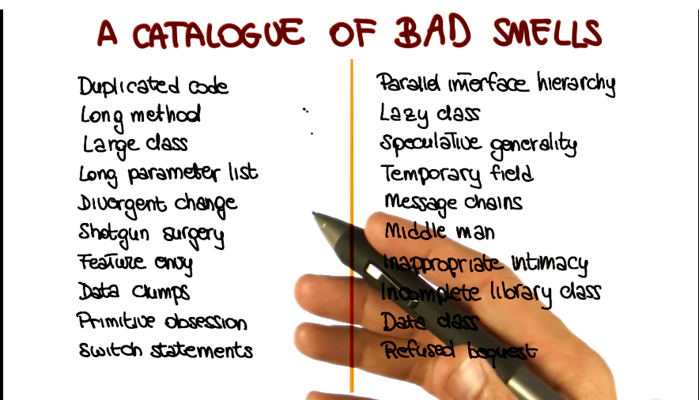

Software Dev Process Lecture Notes - Part 4 Lesson 5 - Software Refactoring
Refactoring
- Process of applying transformations to a program so as to obtain a refactored program.
- Improved design but with same functionality as the original program
- Semantics preserving
- Goal: keep program readable, understandable, and maintainable
- Key feature: behavior preserving
- How can we guarantee that?
- No guarantees, but you can test it!
- If you have a good test suite, that helps a lot.
- Remember, there are no guarantees from testing alone.
Why Refactor?
- Requirements change
- often need to change design to acommodate
- Design needs to be improved
- new feature, more maintainable, etc
- Sloppiness / laziness of developers
- copy/paste programming abstracted into classes or libraries
History of Refactoring
- Refactoring is something that programmers have always done
- Especially important for object-oriented languages
- but useful for all languages
- Opdyke’s PhD Thesis (1990) discusses refacotring for SMALLTALK
- Increasingly popular recently due to agile development adoption
- Fowler’s Book - Improving the Design of Existing Code
- Catalog of refactorings
- List of bad smells
- Guidelines on when to apply refactoring
- Examples of code before and after
Types of Refacotring
- Massive list, we will only cover a few
- Collapse Hierarchy
- A superclass and subclass are tgoo similar
- Consolidate Conditional Expression
- Set of conditionals with the same result
- each check is different but the result is the same
- Combine and extract checks

- Decompose Conditionals
- A conditional statement is particularly complex
- Might be too hard to parse why something does or doesn’t happen
- Extract condition to method call, leverage method name to explain what you’re trying to test for

- Extract Class
- a class may wind up doing the work of two or more, due to code evolution
- creat a new class and move there the relevant fields/methods
- Inline Class
- inverse of extracting a class
- A class may wind up not doing much
- move its features into another class and delete this one
- Extract Method
- most common of the ones we’ve covered
- cohesive code fragment in a large method
- create a method using that fragment, and call that method where needed

How to Refactor
- Full length demo shown here. View video itself for refesher
- Uses demo of Eclipse. Ugh.
Refactoring Risks
- Powerful too, but…
- May introduce subtle faults
- Should not be abused
- performed only when needed
- should be used very carefully on systems in production
Cost of Refactoring
- May be free with good tooling
- But often requires manual work, which costs
- Test development and maintenance, especially those built or added to specifically for a refactoring effort
- Documentation maintenance - changes to names or interfaces must be updated in docs, and that takes effort too
When Not to Refactor
- When code is broken
- Refactoring is not about fixing broken code, it’s about design of code
- Refactoring should never change code behavior, so can’t fix broken code
- When a deadline is close
- time spent on refactoring doesn’t advance features
- risk of regression errors increases risk of missing a deadline
- When there is no reason to!
Bad Smells
- What are bad smells?
- Symptoms in code that may indicate deeper problems
- Usually not bugs, don’t impair function
- But indicate weaknesses in design

- Duplicated Code
- Same piece of code replicated in multiple places
- common from copy/paste programming
- fixed by extract method refactoring
- Long method
- extract method
- decompose conditional
- shorten and break down method to make it more cohesive
- Large class
- extract class or subclass
- break down class to multiple, each with more cohesive functionality
- Shotgun surgery
- every time a change is made, have to go to many classes
- functionality is spread among classes, too much coupling and too little cohesion
- move method/field, inline class
- bring related functionality together, remove dependencies between classes
- Feature envy
- refers to a method that seems more interested in a class other than the one it belongs to
- extract method, move method to class it is referencing
- decreases coupling between classes